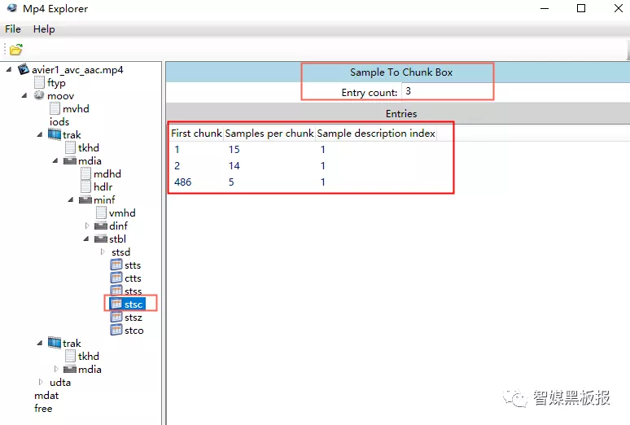
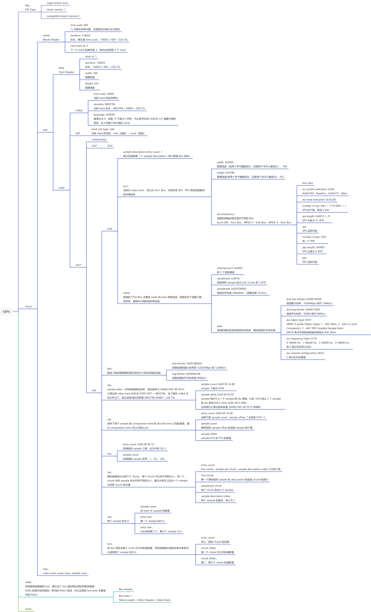

MP4 文件结构浅析
概述
mp4 文件由一个个连续的 box 组成
mp4 = box + box + box + ...box 的类型繁多，没必要去死记它们的类型，记住两个关键 box 即可：
moov- 保存了 SPS、PPS、track-chunk-sample 映射等关键信息mdat- 保存了 H264 NALU
本文的目的是通过解析各种 box 从而了解 mp4 文件结构的核心概念
chunk
一个 mp4 文件可以包含多个 track（视频、音频和字幕），而每个 track 则由多个 chunk 组成
mp4 = video track + audio track + subtitle track + ...
track = chunk + chunk + chunk + ...Stco Box 描述了一个 track 有多少个 chunk 以及每个 chunk 在 mp4 文件里的偏移量，这样就具有了快速定位（seek）chunk 的能力
比如下图说明 track 有 486 个 chunk，每个 chunk 在文件里的偏移量都记录在后面的表里

sample
sample（采样）相当于一帧，解码的过程就是计算出一帧帧的图像，每个 chunk 包含多个 sample
chunk = sample + sample + sample + ...具体哪个 chunk 包含哪几个 sample 由 Stsc Box 描述： stsc = entry count + (first chunk + samples per chunk + sample description index)，如下图，它是这么描述的：
- 第 1 个 chunk 包含 15 个 sample
- 第 2 - 485 个 chunk 包含 14 个 sample
- 第 486 个 chunk 包含 5 个 sample
那么可以计算出这个 track 共有 486 个 chunk（和上面 Stco Box 的描述一致） 和 15 + 485 * 14 + 5 = 4796 个 sample

至此我们可以通过 sample id -> chunk id -> chunk offset 这个链条定位某个 sample 所在的 chunk 及其偏移，但 sample 偏移还是没法得知，而 Stsz Box 正是记录了每个 sample 的大小，如下图：
- sample count = 6796，与上面我们计算出的数据一致
- sample size 是一张记录了每个 sample 大小的表（所以 stsz box 会很大）
那么 sample 在文件里的偏移就可以通过 chunk offset 前进 n 个排在前面的 sample 的长度得出：sample offset = chunk offset + samples before in the chunk

DTS 和 PTS
| 概念 | 描述 |
|---|---|
| I frame | 帧内编码帧，解码不依赖于任何的其它的帧，通常是每个 GOP 的第一个帧，做为随机访问的参考点 |
| P frame | 前向预测编码帧，解码则依赖于其前面的 I/P frame |
| B frame | 双向预测内插编码帧，解码依赖于其前的最近的一个 I/P frame 及其后的最近的一个 P frame |
| GOP | 两个 I frame 之间形成一个 GOP，如果有 B frame 则最后一个一定是 P frame |
| PTS | 用于度量解码后的视频帧什么时候被显示出来 |
| DTS | 标识视频流在什么时候开始送入解码器中进行解码 |
在没有 B frame 的情况下 DTS 和 PTS 的输出顺序是一样的，有 B frame 的话就不一样了，如下图：

Stts Box 是 sample id 和解码时间 DTS 之间的映射表，通过这个表格我们可以找到任何时间的 sample，如下图：
- sample delta 值一样说明是固定帧率，帧率为
30000 / 1001 = 29.97 - 可以计算出该 video track 的时长为
6796 * 1001 = 6802796（6796 跟上面我们计算的 sample 数量一致），换算成秒就是6802796 / 30000 = 226.75s（30000 是 mvhd box 里定义的时间单位）

Ctts Box 描述了每个 sample 的 composition time 和 decode time 之间的差值，通过 composition time 就可以计算出 PTS，如下图：
- entry count - 描述了下面 sample count 和 sample delta 组成的二元组个数
- sample count - 连续相同 offset 的 sample 个数
- sample offset - CT 和 DT 之间的 offset

计算前面 5 个 sample 的 DTS 和 PTS
| 0 frame | 1 frame | 2 frame | 3 frame | 4 frame | |
|---|---|---|---|---|---|
| sample detla | 1001 | 1001 | 1001 | 1001 | 1001 |
| sample offset | 2002 | 5005 | 2002 | 0 | 1001 |
| DTS | 0 | 1001 | 2002 | 3003 | 4004 |
| PTS | 2002 | 6006 | 4004 | 3003 | 5005 |
解码：0 - 1 - 2 - 3 - 4
显示：0 - 3 - 2 - 4 - 1
overview

应用之 seek
拖动视频进度条，进度条对应的应该是 PTS，那么根据 PTS 找到对应的 sample，如果是 P/B frame 还需要往前寻找所在 GOP 的 I frame，然后找到它所在的 chunk 而从定位到它的偏移值，从这个偏移值开始读取整个 GOP 长度的数据流并解码